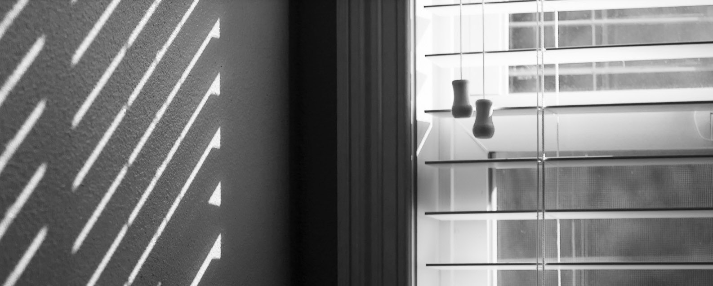
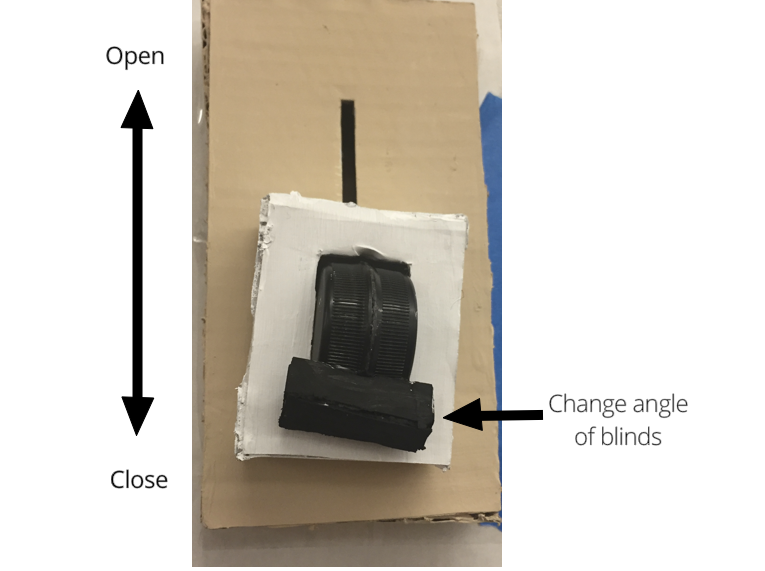

Control Redesign
Redesign the controls for window blinds

PROJECT BACKGROUND
Controls are one of the fundamental building blocks of interaction design. A control is a conduit between a user’s intention/desire and a system’s ability to understand and act on that intent. For this project, I explored opportunities to bring back respect for people’s perceptual-motor skills and the sensuous/sensory nature of their bodies when designing a new instance of a control that people interact with in the physical world. I found a real-world control that needed to be improved. I re-imagined the control and design it as a physical point of interaction that communicates these three things:
- 1. Perceptual Affordance: How the control communicates the action a user can take.
- 2. Feedforward: How the control communicates what the likely outcome of an action might be.
- 3. Feedback: How the control communicates its response to the user input.
CURRENT STATE
For this project, I focused on the traditional venetian style blinds that was most commonly found in household.Currently, there are two different ways to control the window blinds. And for first time users, it will be confusing to know which part controls what. There is not enough feedforward for the users to know what outcome will happen from looking at these controls.
1. Tilt Wand: Change the angle of the slats
There is currently no feedforward at all. Just by looking at the tilt wand, a person does not know what its function is. There is nothing for us to anticipate the action that comes from us turning the rod. In addition, it is difficult to know in which direction and how far we should turn the rod for the slats to be at a specific angle.
2. Lift Cord: Raise the entire blind up and down
The perpetual affordance of a lift cord is that when a user sees the cord, they will want to pull it. When pulling up the lift cord, a person will need to tug it at a certain angle for the blind to come all the way up and another angle for it to come down. It is also difficult to stop the blind at a certain ideal level.
INITIAL PROTOTYPE


NEXT ITERATION

FINAL DESIGN
By redesigning the window blind control, I made it easy for people to change the angle of the slats and raise and lower the blinds all in one control. I got inspired to make it more like a computer mouse. The design of a mouse allows users to perform two motions simultaneously. Users could use the small wheel to move the page up and the down and also moved the entire mouse at the same time. I used this concept to create my control to have a slider that would move the blinds up and down while the rotating knob was used to change the angle of the slats. This new control made it easier to adjust the blind without dealing with repetitive motion of a button or the hassle of pulling on a cord or turning a rod.
